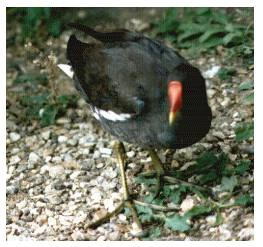

Moorhen
A common bird to the reservoir, seen all year round. Breeds.

1956 - 2 nests with eggs, 6ft & 4ft above water. Willow bushes, built on sticks & rootlets
10/10/57 - 80 birds. (DEP)
05/11/59 - 50 birds
22/12/63 - 57 birds
12/11/64 - 53 birds
1965 - Between 30 & 50 birds
1966 - Up to 43 birds
17/12/67 - Maximum count of 52 birds
12/12/68 - Maximum count of 84 birds. Record count to date. (DEP)
25/09/69 - 54 birds
08/01/70 - 40 birds
28/11/71 - 37 birds
17/12/72 - 29 birds. Bred this year
29/12/73 - 30 birds
1979 - Bred
14/12/93 - 14 birds.
19/11/94 - 20 birds
02/07/96 - Pair & 2 juveniles
??/09/98 - 12 birds, inc. several juveniles
1999 - 2 pairs bred, 6 juveniles seen
??/10/99 - 10+ birds
??/11/99 - 14 birds
2000 - Bred
21/09/01 - 10+ birds
23/08/03 - 11 birds
22/10/04 - 10 birds
19/07/05 - 10 juveniles
01/11/05 - 22+ birds
08/11/06 - 29 birds
27/01/07 - 16+ birds
18/07/09 - 17+ birds
31/07/10 - 23+ birds
2011 - max 7 adults. Bred this year
2012 - max 12+ adults on 30/10. Many Moorhens seen with young 29/07
2013 - Bred, Pair with 2 broods of different ages seen in July. The older juveniles seen to help feed the small chicks
2014 - Max 23+ on 27/08. Bred, a few chicks seen at end of April, pair mating on 15/07
2015 - Max 21 on 03/10. 1 pair bred in May
2016 - More than 1 pair bred. 23+ on 09/08 including juveniles.19 on 12/09, 15 on 29/09, 23 on 30/09. 1 killed by crows on 19/11
2017 - At least 2 pairs bred
2019 - A nest was found 10ft up in a willow on 17/04
2020 - At least 2 pairs bred. Max count 19+ on 22/09
2021 - At least 2 pairs bred. Max count 17 on 01/09, also 14+ on 18/11
2022 - Bred this year. Max 23 on 23/08
2023 - Several pairs bred this year. Max 21 on 16/09
2024 - At least 2 pairs bred. Max 22 on several August dates
2025 - Maximum count only 7+ on 05/02, also 6 adults on 01/06, 1 immature on 03/06 and 7 on 21/12